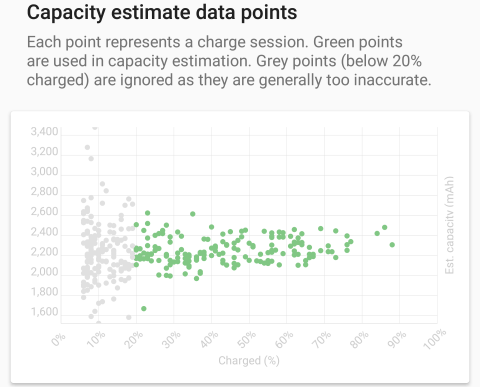
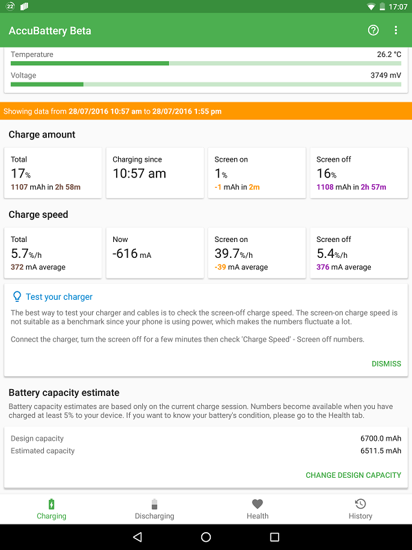

我用 AccuBattery 把手机电池摸了个底朝天
装了两周 AccuBattery，从健康度空白到散点图稳定，再到用它对比了家里三台充电器——聊聊这款电池监测工具的真实体验。
为什么我会装它
去年底换的主力机，用到现在刚好一年。官方标称 4500mAh，但我总感觉续航不如刚买那会儿——亮屏时间从 7 小时掉到了 5 小时出头。这种"感觉"很微妙，你没法拿着感觉去找售后，也没法拍张照证明电池确实不行了。
于是我想找个 App 测测电池的真实健康度。
搜了一圈电池监测类工具，很多都是那种"装完跑一次跑分然后卸载"的一次性玩具。AccuBattery 不一样——它的思路是不跑分、不打扰、默默积累数据，然后在后台把每次充电的电流、电压、容量变化都记下来，久而久之拼出一张电池容量的散点图。去AccuBattery官网看完介绍就决定装了。
初印象：界面干净，但健康页一片空白
安装包从官方下载拿的，Google Play 上也有，免费版直接能用。打开 App 之后四个 Tab 很清晰：充电、放电、健康、历史。充电 Tab 一插上充电器就实时跳数据——电流多少 mA、预计充满还剩多久、这次会话已经充了多少 mAh，数字跳动得很直观。
但我最想看的健康 Tab，一片空白。
"这什么破玩意儿？"我当时的第一反应。后来才知道 AccuBattery 2.0 之后改了规则——只统计跨度 60% 以上的充电会话。我之前都是日常补电：睡前充到 90%、早上起来拔，电量跨度经常只有 20%-30%，全都被过滤掉了。
解决方法说起来简单：让电量掉到 20% 以下，然后一口气充到 80% 以上，这样一次就有了 60%+ 的跨度，系统会把这次会话当成一个有效数据点。重复 3 到 5 次这样的大跨度充电，健康页自然就出来了。
我按这个方法跑了三天，健康度从第一次的 91% 稳定到了 87%——和我之前的"感觉"对上了，确实有衰减。

用了两周，三个最有价值的体验点
1. 容量散点图：不是一个数字，是一群数字
很多电池工具会直接给你一个健康度百分比，看起来很权威，但我总觉得这种单点数字不够可靠——你怎么知道它是准的？
AccuBattery 的做法我很喜欢：它不给你一个"最终答案"，而是把每次充电产生的估算值当成一个带误差的散点画在图上。你自己看——散点集中在哪个区域，那个区域的中心就越接近真实容量。
我后来去AccuBattery文档翻了一下才弄明白背后的逻辑：从 20% 充到 80% 的过程中，App 持续测量流入电池的总电荷（mAh）和对应的电压变化，然后用电压变化量反推百分比变化——总充入 mAh 除以百分比变化率就是估算容量。单次估算受干扰因素太多了（亮屏耗电、电压反推误差、充电起点终点的百分比本身就不准），所以 AccuBattery 根本不相信单次估算，而是等多次充电后散点密集的区域来收敛。
说实话这个设计让我对 AccuBattery 多了几分信任——它不装模作样地说"你的电池是 87.3%"，而是诚实地告诉你"我的估算有误差，但多次测量的平均值应该接近真实值"。
2. 充电器横向对比：原来我家那根线是废物
AccuBattery 有个隐藏用法——测充电速度。充电 Tab 里有个"灭屏充电速度"字段，你把手机息屏放着，等 3 到 5 分钟电流稳定了，它会给出一个每分钟充入多少 mAh 的数字。
这个功能本来是给 Premium 用户看历史曲线用的，但免费版也能看当前值。我灵机一动，用同一台手机、同一电量区间（每次都从 40% 左右开始）、都息屏 5 分钟，换家里三台充电器和三根线挨个测。
结果很打脸。原厂 27W PD + 原厂 Type-C 线，灭屏速度稳定在 2650 mA，从 30% 充到 80% 大约 25 分钟。然后我换了之前在拼夕夕买的一根宣称"支持 65W"的第三方线，接同一个原厂充电器——速度直接掉到了 1800 mA，充到 80% 用了 37 分钟。差了将近一半。
再换那台 65W 氮化镓充电器，接原厂线，速度也只有 1600 mA——不是充电器不行，是手机本身最高只支持 18W QC，氮化镓的大功率根本发挥不出来。
最后那个 5W 慢充头就更离谱了，速度 750 mA，充一次得一个半小时。

通过这个测试我才搞清楚：之前觉得"充电器不行"的几次体验，其实大部分是线的问题。那根拼夕夕 9.9 包邮的线电阻太高，压降大，手机被迫降低电流来保护电池，看起来就像充电器没出力。现在我把那根线扔了，换回原厂线，日常快充速度明显正常了。
3. 磨损追踪：一周一两次就够了
健康 Tab 不只是给一个当前健康度，它还会画一条时间曲线——横轴是日期，纵轴是估算容量。数据点够多之后，这条曲线的斜率就能告诉你电池的衰减速度：是平稳下降、还是突然跳水。
我自己的那台，两周下来散点从 3980mAh 慢慢收敛到 3915mAh，对应健康度 87%，斜率是每周大概掉 0.3%——属于正常使用中的自然衰减，不担心。
但如果某段时间散点突然往下掉了一个台阶（比如一周掉了 5%），那就得警惕了——要么是某次高温使用（边充边玩原神两小时那种）造成了不可逆损耗，要么是充电习惯突然变差。AccuBattery 文档里提到，每周做 1 到 2 次大跨度充电就够了，不用天天测，频繁充放反而会加速衰减。
Premium 值不值
免费版的广告确实有，但只是底部一条小横幅，不是插屏弹窗，不影响正常使用。核心功能——健康度估算、实时电流监测、容量散点图——全在免费版里，Premium 解锁的是悬浮窗、历史曲线深度分析、深色主题这些"增强体验"。
说实话，如果只是为了去广告买 Premium 不太值，但悬浮窗对经常充电的人挺好用——插上充电器就弹个小窗显示当前电流和预计充满时间，不用打开 App。
AccuBattery 团队的收费思路我挺欣赏的：他们把核心价值（电池健康测量）放在免费版，Premium 卖的是专业工具和体验优化，不是那种"不给钱就只给你看个壳"的套路。这也是 AccuBattery 被认为是同类 App 里最有良心的之一。
适合谁，不适合谁
适合：
- 用了一年以上的老机，想知道电池到底衰减了多少再决定要不要换
- 有快充焦虑，想确认手里的充电器和线是不是真的在跑标称功率
- 喜欢折腾充电习惯，想追踪自己的充电行为对电池寿命的影响
不适合：
- 刚买的新机（健康度 100% 看不到啥变化，纯属浪费时间）
- 不想插着充电器等 60% 大跨度充电的懒人（这个是前提条件，绕不过去）
- 某些冷门设备或深度定制 ROM 的用户——AccuBattery 需要 Android 系统正确暴露电池电流 API，有些国内 ROM 会屏蔽这个接口，充电 Tab 的电流读数会永远是 0
两周的收获
两周时间，我从"感觉续航不行"变成了"电池实际健康度 87%、容量散点稳定在 3915mAh"，用 AccuBattery 对比了三根线和三个充电器的真实能力，找出了那根拖慢充电速度的罪魁祸首。
这个 App 最大的优点可能是它不追求快——不像很多跑分软件让你跑一次就出结果，它要你老老实实充几次大跨度的电，等数据自己积累起来。在今天这个什么都讲究"秒出结果"的环境里，这种"慢工出细活"的做法反而让我觉得靠谱。
这套电池监测的完整资料我分别同步到了三个代码仓库方便大家按访问条件挑：GitHub 适合海外用户，国内访问慢的朋友可以转去 Gitee 或 GitCode，三份内容是同步的，想看容量估算原理、手动基准测试步骤或者充电器对比表的朋友随便挑一份翻就行，内容比 App 里的说明详细多了。